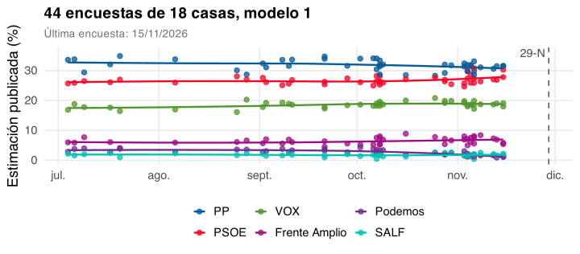
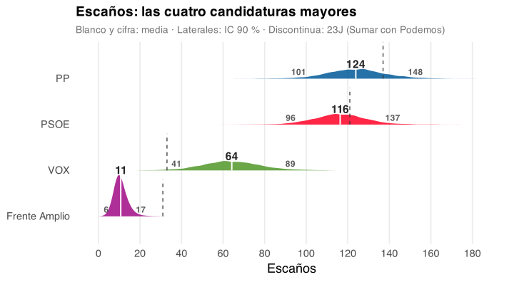
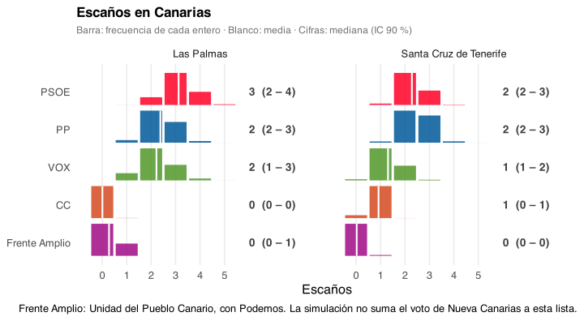
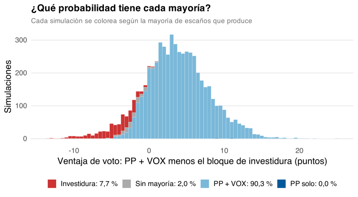

De la encuesta al escaño
Un flujo de trabajo bayesiano en R para la agregación electoral e incertidumbre provincial
Jornadas de R de Canarias
Actualizado el 19/11/2026
25 de noviembre de 2026
El problema
Las encuestas dan porcentajes. El Congreso reparte escaños.
- 350 escaños, repartidos en 52 circunscripciones
- Cada provincia aplica D’Hondt con barrera del 3 %
- Un mismo % nacional puede dar mayorías muy distintas
La pregunta real no es “¿qué % saca el PP?”, es “¿qué probabilidad tiene cada reparto de escaños?”
Con un enfoque bayesiano no perseguimos el número, sino la distribución completa.
El flujo en una imagen
La materia prima son las encuestas publicadas (y vienen sin los microdatos)
Encuestas
⬇ dos modelos brms en cascada
Posterior nacional de 14 categorías
⬇ + error histórico de las encuestas
Posterior ajustado
⬇ + reparto provincial con dos efectos + candidaturas de cada provincia
Posterior provincial
⬇ D’Hondt, provincia a provincia
Distribución posterior de escaños
Las encuestas

- ciento76 y objetivo176, solo con tamaño muestral publicado
- Modelo 1: 47 encuestas de 19 casas, hasta el 18/11/2026. Sin CIS ni ElectoPanel
- Modelo 2: 81 encuestas de 10 casas, desde junio de 2025
Modelo 1
Modelo multinomial bayesiano con brms: cada encuesta aporta un vector de votos.
(1 | encuestadora): el efecto casa, sin pendiente propiatime: días desde el 1 de julio; una tendencia común por partido- En Andalucía era
(time | empresa): con pocas encuestas por casa, no se aprende
Modelo 2
Reparte el BLOQUE entre Junts, ERC, PNV, EH Bildu, BNG, CC, UPN y RESTO.
trials(bloque): los votos del BLOQUE, no la muestra- Sin efecto casa: ElectoPanel pesa el 49 % de los votos del BLOQUE
- Ventana larga, desde junio de 2025: hay pocas encuestas con regionales
Del ajuste a los draws
posterior_epred() da una proporción por draw y categoría, para el día de la elección.
# Modelo 1: una fila por casa y media entre casas, draw a draw
casas <- unique(as.character(mod_1$data$encuestadora))
nd <- tibble(time = t_e, n = 1, encuestadora = casas)
ep <- posterior_epred(mod_1, newdata = nd) # 12.000 × 15 casas × 7
d1 <- apply(ep, c(1, 3), mean) # 12.000 × 7
# Modelo 2: reparto interno del BLOQUE
nd <- tibble(time = t_e, bloque = 1)
d2 <- posterior_epred(mod_2, newdata = nd)[, 1, ] # 12.000 × 8n = 1ybloque = 1: con un ensayo, el epred es una proporción- El array es draws × filas de
newdata× categorías:apply()promedia las casas
El error histórico
Lo estima el modelo full bayesian: 5 generales y 39 autonómicas, 44 elecciones.
- Cada draw trae su propio sesgo, su desviación y su correlación: no hay valores fijos
- Desviación típica del error, en puntos: PP 3,2, PSOE 2,8, VOX 3,2
- Correlación entre el error con PP y el error con VOX: −0,51
El IC 90 % de esa correlación es [−0,69; −0,25].
Si las encuestas se pasan con uno, se quedan cortas con el otro: fallan más al repartir entre PP y VOX que con su suma.
Provincia: dos efectos con brms
El cambio de ratio tiene un efecto de comunidad y otro de provincia.
La cobertura sube a 94 %, calculada con las mismas elecciones que calibran los efectos.
Sin la transición probada, la cobertura no cambia (leave-one-transition-out).
Resultado: las candidaturas mayores

Resultado: Canarias

¿Qué mayoría?

Cada draw es un Congreso
Con los draws, una pregunta sobre mayorías es contar. Código real, sobre las simulaciones de esta charla:
draws <- readRDS(here("outputs", "escanos_draws.rds"))
# P(PP + VOX tienen mayoría absoluta)
mean(draws$PP + draws$VOX >= 176)
## [1] 0.8988333
# P(PP tiene más escaños que PSOE)
mean(draws$PP > draws$PSOE)
## [1] 0.6498333
# intervalo de la suma
quantile(draws$PP + draws$VOX, c(0.05, 0.5, 0.95))
## 5% 50% 95%
## 171 189 207Limitaciones y un único modelo
Según Virgilio Gómez Rubio: lo correcto sería meter toda la incertidumbre en un único modelo.
- El modelo estima la media de las encuestadoras, no el resultado
- El reparto provincial hereda el 23J
- Lo he intentado en Stan: el full bayesian y su pronóstico vivo
![DAG simplificado del modelo conjunto: generales a la izquierda, autonómicas a la derecha y, en medio, las matrices de covarianza que comparten.]()
Gracias
Una foto de las encuestas, no una predicción del domingo.
github.com/joscani/bayesian-metaanalisis
Muestrear no es pecado: Voto · Escaños · Candidaturas